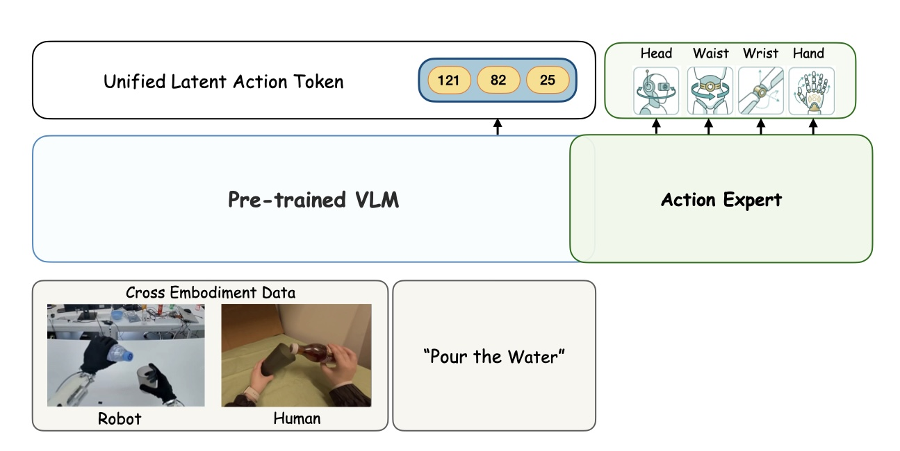
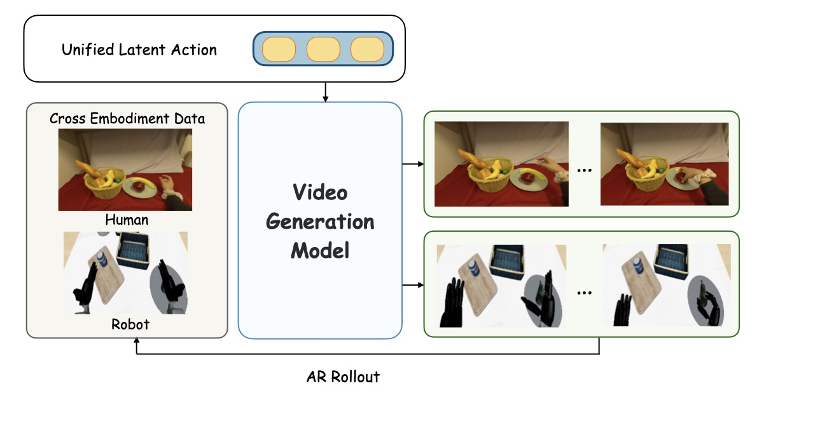
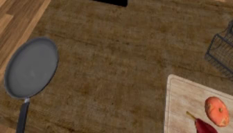
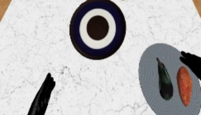
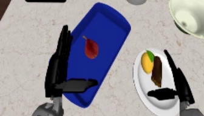
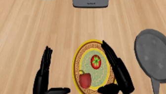
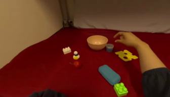
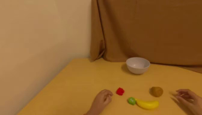
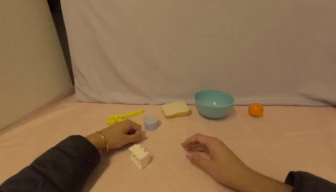
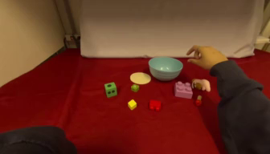

1XPENG Robotics·2Tsinghua University·3The University of Hong Kong
*Equal contribution †Corresponding author
Correspondence: yyge13@gmail.com
Scaling humanoid foundation models is bottlenecked by scarce robotic data. While massive egocentric human data offers a scalable alternative, bridging the cross-embodiment chasm remains a fundamental challenge. UniT establishes a unified physical language, a single tokenizer that enables zero-shot transfer for both policy learning and world modeling.
Human demo → Humanoid executes unseen task
Human action → Humanoid video generation
Humanoid data is scarce. Human motion is abundant. But the two bodies don't match. To train on both, we need a medium that aligns their action spaces.
The traditional medium is motion retargeting. For each robot, a kinematic solver is hand-engineered to rewrite human joints into robot joints. The action gets converted, but the video does not. As a result, training still pairs human visual observations with robot actions. The mismatch is built into the learning problem from the start. And because every new robot needs its own solver, this pipeline does not scale cleanly.
We want a better medium. It should scale without per-robot engineering. It should also avoid the visual-action mismatch. The answer is a shared latent action space. The question is what that space should look like.
Prior designs differ in how tightly they align vision and action.
All of them miss the same thing. Vision and action may be brought closer, but they are still modeled as separate spaces. What is missing is a single representation that both modalities truly share.
Action reconstructs itself. No visual grounding. Codes stay embodiment-specific.
Vision reconstructs itself. Pose priors are ignored. Appearance gets entangled.
Each modality reconstructs itself. Alignment is at most distribution-level (dashed). No cross-modal reconstruction between branches.
Cross-reconstruction through one codebook. Every branch's token must decode into both modalities.
If we can't align bodies directly, we need an anchor. Vision is the natural candidate. Human and humanoid kinematics may differ, but the physical outcomes of their intents share a consistent visual representation. That is why visual observations can serve as a universal anchor for aligning disparate kinematic spaces.
But vision alone is not enough. Video mixes physical change with appearance factors such as background, lighting, and texture. Action traces have their own noise as well, including embodiment-specific kinematics and sensor jitter. Neither modality is pure signal on its own.
They do, however, describe the same physical event from different sides.
Whatever is coherent across both is physical by construction. Whatever only one side can see is noise.
UniT turns that coherence into the anchor. Vision and action are forced to reconstruct each other through a shared codebook. Only the mutual signal survives. What remains is embodiment-agnostic physical intent. We call it the Unified Latent Action.
UniT functions as a cross-modal information bottleneck: it concurrently extracts temporal-visual, kinematic, and fused visuo-motor features, and enforces rigorous cross-reconstruction to distill the embodiment-agnostic physical intent.
Visual branch (IDM on frozen DINOv2 features) captures physical transitions.
Action branch encodes embodiment-specific state and action chunks via per-embodiment MLPs.
Fusion branch integrates both into a compact visuo-motor representation.
Every quantized token is decoded by both a visual decoder (FDM) and an action decoder. By forcing kinematic features to reconstruct visual transitions, heterogeneous actions are anchored to their physical consequences. Uncorrelated noise from either domain is discarded.
Policy learning: Fusion-branch tokens serve as a structured cross-embodiment prediction target for VLMs (VLA-UniT).
World modeling: Continuous action-branch features provide a universal conditioning interface for video generation (WM-UniT).


Before looking at downstream task performance, we verify whether UniT does what it claims: project heterogeneous human and humanoid actions into a shared latent space, and propagate that alignment into the internals of downstream models. We perform t-SNE analysis on samples drawn from the RoboCasa GR1 and EgoDex co-training mixture, at three levels — raw actions vs. UniT token embeddings, VLA vision-language features, and WM cross-attention context embeddings.
Downstream baselines share architectures with our UniT variants but consume raw actions: GR00T-Qwen2.5-FT for policy learning (Qwen2.5-VL backbone with the core language modeling blocks fine-tuned to predict raw actions) and Cosmos Predict 2.5 with raw action conditioning for world modeling. Both baselines are trained on the same human-humanoid mixture.
In the raw action space, human and humanoid data form clearly separated clusters reflecting the inherent distribution gap between heterogeneous kinematics. After encoding through UniT, the visual-anchored cross-reconstruction successfully projects disparate action spaces into a shared manifold.
Mean-pooled last-layer vision-language features. The vanilla VLA maintains separated human/humanoid distributions, while VLA-UniT produces interleaved representations.
Mean-pooled last-layer cross-attention outputs. The vanilla WM exhibits fully disjoint clusters, whereas WM-UniT brings them into a single unified distribution.
UniT token prediction gives the VLM a compact, visually-anchored prediction target that encodes physical intent, replacing direct action regression inside the learning loop. A lightweight flow head then decodes the predicted tokens into embodiment-specific actions for execution.
We evaluate VLA-UniT along two axes: efficiency — benchmark performance and sample efficiency on the RoboCasa GR1 simulation benchmark — and human-to-humanoid transfer, which leverages EgoDex human demonstrations to improve policy learning, validated both in simulation and on the real-world IRON-R01-1.11 humanoid (50-dimensional action space).
We evaluate VLA-UniT on the RoboCasa GR1 simulation benchmark along two protocols: full-data benchmark performance against a broad set of policy baselines, and reduced-data sample efficiency against the matched GR00T architecture. Both probe whether compact, visually-anchored token prediction extracts task-relevant intent more effectively than direct action regression.
VLA-UniT reaches 66.7% overall success rate on the full-data RoboCasa GR1 benchmark, balanced across Pick & Place (67.3%) and Articulated (64.7%). It surpasses the previous best FLARE by +11.7%, and the GR00T baseline — which shares the same architecture without UniT token prediction — by +18.9%.
With only 10% of the training data (100 trajectories per task), VLA-UniT (45.5%) already approaches the GR00T baseline trained on full data (47.8%) — roughly a 10× reduction in data requirements. Operating in a structured discrete latent space, rather than regressing raw actions, lets the VLM extract task-relevant intent more efficiently from limited demonstrations.
Under the few-shot regime in simulation, we co-train VLA-UniT on robot data and EgoDex's basic_pick_place human demonstrations (27,419 trajectories), then fine-tune on robot data alone — testing whether UniT's shared latent space lets humanoid policy learning actually draw on human data.
Incorporating human data brings consistent improvements across both in-domain and all three OOD categories. The in-domain average rises from 45.5% → 50.0%, with the largest gain in Pick & Place (41.7% → 49.4%) — exactly the setting that corresponds to the EgoDex domain — and the OOD average rises from 34.7% → 38.5%.
We next deploy VLA-UniT on the real-world IRON-R01-1.11 humanoid (50-dimensional action space) to check whether the simulation gains carry over to physical execution. Two tasks are evaluated: Pick & Place (analogous to EgoDex basic_pick_place) and Pouring (analogous to pour, requiring bimanual coordination).
Generalization is probed along five OOD axes — Geometry, Distractor, Target, Background, and Combinational. The first four are set up so that robot data provide only partial coverage, while human demonstrations introduce the complementary variation; the Combinational axis tests instruction-based disambiguation among multiple objects seen during training.
With robot data alone, VLA-UniT already substantially outperforms the GR00T baseline on both tasks: Pick & Place 70% vs. 30%, Pouring 35% vs. 5%. Adding EgoDex human co-training lifts them further to 78% and 75% — the gain is particularly pronounced on Pouring, where coordinated dual-arm control is rare in the limited robot set but abundant in human demonstrations.
Human co-training consistently improves all five OOD axes. Geometry (23.3% → 63.3%) and Distractor (26.7% → 60.0%) show the largest gains — exactly where human videos introduce novel object shapes and visual clutter absent from the limited robot set. The Combinational axis, which tests instruction-based disambiguation, also jumps from 10% → 70%, suggesting that the broader interaction diversity from human co-training also strengthens compositional generalization.
We finally evaluate on a stacking task that is not covered by any robot training demonstration: the robot set only includes pick-and-place of individual bowls, while EgoDex human videos do contain stacking sequences performed with view switching and upper-body coordination. This isolates whether VLA-UniT can carry a new task over from human data alone.
Action-conditioned world models normally take in embodiment-specific raw actions — humanoid joints, wrist poses, and human hand trajectories each living in their own action vocabulary. WM-UniT replaces this interface with UniT's continuous pre-quantization features as a unified conditioning signal, built on the Cosmos Predict 2.5 action-conditioned video backbone and trained with flow matching.
We examine WM-UniT along two axes: controllable generation — on a single embodiment (DROID) and under human-humanoid co-training — and human-humanoid transfer, via both human pre-training and direct cross-embodiment conditioning.
We start in the simplest setting: a single embodiment, DROID, where raw actions already share a consistent kinematic convention. The question is whether UniT conditioning still improves controllability here. We compare three interfaces under an identical Cosmos Predict 2.5 backbone — Raw Action, WM-Action (action-only latent tokenization), and WM-UniT.
WM-UniT wins on EPE — the most direct indicator of action controllability — while WM-Action does not yield a similarly reliable gain, indicating that latent tokenization alone is insufficient without visual anchoring.
| Method | PSNR ↑ | SSIM ↑ | LPIPS ↓ | FVD ↓ | EPE ↓ |
|---|---|---|---|---|---|
| Raw Action | 21.02 | 0.820 | 0.097 | 76.38 | 0.2662 |
| WM-Action | 20.86 | 0.819 | 0.102 | 80.30 | 0.2593 |
| WM-UniT | 21.32 | 0.823 | 0.095 | 76.44 | 0.2588 |
We next jointly train a single world model on EgoDex human demonstrations and RoboCasa-GR1 humanoid demonstrations. The question is whether a unified conditioning interface still holds up when the training signal spans two heterogeneous embodiments in the same model.
WM-UniT consistently outperforms Raw Action on both subsets, with the clearest gain in controllability (EPE). Together with the aligned cross-embodiment context embeddings from our representation analysis, this indicates that UniT provides a shared conditioning space that lets the world model co-train on human and humanoid data without collapsing into embodiment-specific dynamics.
| Dataset | Method | PSNR ↑ | SSIM ↑ | LPIPS ↓ | FVD ↓ | EPE ↓ |
|---|---|---|---|---|---|---|
| EgoDex | Raw Action | 24.84 | 0.800 | 0.164 | 171.37 | 0.706 |
| WM-UniT | 28.06 | 0.858 | 0.086 | 130.87 | 0.519 | |
| RoboCasa-GR1 | Raw Action | 13.45 | 0.590 | 0.259 | 237.13 | 0.558 |
| WM-UniT | 17.66 | 0.718 | 0.142 | 166.50 | 0.453 | |
Co-training shows that a shared conditioning space exists; pre-training asks whether physical dynamics learned from human data can actually be transferred to humanoid prediction. We pre-train WM-UniT on EgoDex's 27,419 basic_pick_place human trajectories, then fine-tune on RoboCasa-GR1 pick-and-place data.
Human pre-training brings consistent gains across all metrics, with the most meaningful improvement reflected in controllability. The dynamics learned from human data remain usable after transfer to humanoid prediction, rather than being tied to human-specific kinematics — UniT provides a transferable dynamics interface for world modeling.
| Configuration | PSNR ↑ | SSIM ↑ | LPIPS ↓ | FVD ↓ | EPE ↓ |
|---|---|---|---|---|---|
| WM-UniT w/o Human Pre-training | 16.34 | 0.678 | 0.168 | 180.51 | 0.478 |
| WM-UniT (Full) | 18.06 | 0.713 | 0.135 | 153.31 | 0.446 |
Beyond co-training and pre-training, we directly test whether UniT tokens from one embodiment can condition video generation for the other — without any domain-specific adaptation.
The setup is straightforward. We condition the world model with the per-frame action sequence of a source demonstration, apply it on top of the target embodiment's start frame, and let the model autoregressively generate the full video. Both directions are evaluated — Human→Humanoid and Humanoid→Human — and we compare WM-UniT against Raw Action conditioning.
To quantify these generations, we use Gemini-3-Pro as an automated judge and score three dimensions on a 1–5 scale: Semantic consistency (whether the intended action is preserved), Temporal consistency (whether motion timing and sequencing match, including non-monotonic trajectories such as reach-then-retract), and Geometric consistency (whether spatial trajectories and pose details are faithful).
| Direction | Method | Semantic ↑ | Temporal ↑ | Geometric ↑ | Overall ↑ |
|---|---|---|---|---|---|
| Robot → Human | Raw Action | 2.96 | 3.12 | 2.74 | 2.92 |
| WM-UniT | 3.91 | 3.98 | 3.66 | 3.84 | |
| Human → Robot | Raw Action | 2.98 | 3.16 | 2.72 | 2.95 |
| WM-UniT | 3.28 | 3.43 | 3.09 | 3.27 | |
WM-UniT consistently outperforms Raw Action in semantic, temporal, and geometric consistency (3.28 / 3.43 / 3.09 vs. 2.98 / 3.16 / 2.72), confirming that UniT preserves fine-grained action intent across embodiments.




WM-UniT achieves stronger consistency across all three dimensions (3.91 / 3.98 / 3.66 vs. 2.96 / 3.12 / 2.74), with the largest gain in geometric fidelity.




UniT's design rests on two claims: (1) both vision and action are needed — action-only methods suffer cross-embodiment distribution misalignment without visual grounding, while vision-only methods entangle low-level appearance and miss fine-grained motor detail; and (2) the two modalities must be explicitly aligned through cross-reconstruction, rather than treated as disconnected vocabularies.
We validate both claims under the human-humanoid co-training setup (EgoDex + RoboCasa-GR1 pre-train, RoboCasa-GR1 fine-tune), where the tokenizer's ability to bridge embodiments is directly tested.
VLA-UniT reaches an OOD average of 49.9%, consistently outperforming both single-modality variants: VLA-Vision (45.2%) provides a transferable visual signal but misses fine-grained motor detail, while VLA-Action (42.1%) captures motor intent but struggles with the cross-embodiment distribution gap without visual grounding. Removing cross-reconstruction drops performance further to 30.3% — below both single-modality variants despite using both inputs — indicating that multi-modal input alone does not guarantee alignment. Explicit cross-reconstruction closes that gap with a +19.6% lift.
On in-domain performance we further include VLA-Villa, which uses unidirectional vision-to-action (V2A) reconstruction instead of UniT's bidirectional cross-reconstruction. VLA-UniT (66.8%) consistently outperforms VLA-Villa (63.1%), confirming that bidirectional alignment is more effective than unidirectional alternatives for producing aligned cross-embodiment tokens.
In-the-wild human motion capture data inevitably contains noise from sensor jitter and annotation artifacts. We test whether UniT's cross-reconstruction — which grounds actions in visual transitions — provides implicit denoising by encoding and decoding perturbed action signals.
Gaussian noise of intensity σ (normalized by the global action standard deviation) is injected into EgoDex action trajectories, and reconstruction quality is measured by MSE against the clean signal. We compare UniT against two action-only tokenizers: FAST, a frequency-based BPE action tokenizer, and Action Tokenizer, which uses the same RQ-VAE architecture as UniT but is trained on action data alone. Drag the slider to vary σ.
We presented UniT, a visual-anchored latent action tokenizer that projects heterogeneous human and humanoid data into a shared discrete space through tri-branch cross-reconstruction. Deployed as VLA-UniT and WM-UniT, it enables consistent human-to-humanoid OOD transfer in both simulation and the real world, zero-shot task transfer with emergent upper-body coordination, and cross-embodiment dynamics transfer for world modeling. Ablations confirm that having both modalities is not enough on its own. A shared vocabulary only emerges when the two are explicitly forced to reconstruct each other.
With this shared space now in place, the natural question is how far it can scale. UniT's visual branch encodes physical transitions from observations alone, without paired action labels, so the shared space is readily extensible to video sources that never came with motor annotations, including the vast reservoirs of internet and egocentric video. And because alignment in UniT is entirely data-driven, even diverse human motion capture can enter the same space directly, without per-robot retargeting. Full-body coordination and dexterous control, in all the variety already recorded, can keep pouring into one latent vocabulary.
Beyond what can enter this shared space, there is the question of what can happen inside it. The same vocabulary is already spoken by both policies and world models, so a policy can propose latent actions that a world model simulates into visual consequences, and those imagined rollouts can feed back as reward signals for reinforcement learning or as search targets for test-time planning, all within one shared space. UniT has so far shown this space as a substrate for transfer. Turning it into a substrate for closed-loop embodied reasoning is what we find most compelling to explore next.